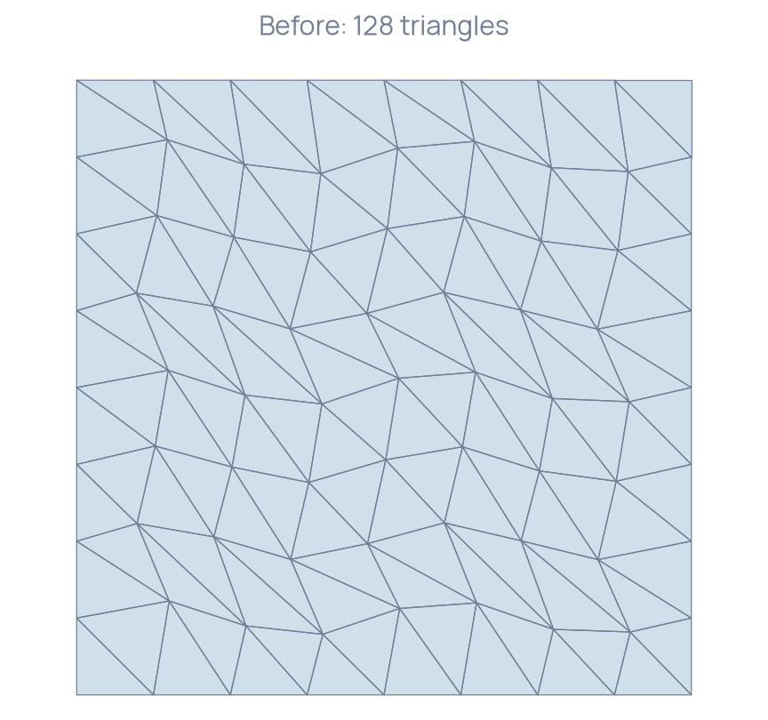
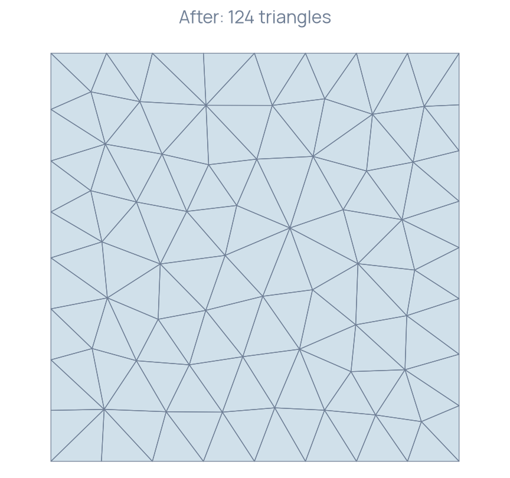

Improving triangle quality
Remesh a perturbed unit square and inspect its cell quality.
Geometry and objective
A nine-by-nine vertex grid is scaled to the unit square. Small interior coordinate perturbations create uneven triangles while the square boundary and its corner positions are retained. MMG optimization changes the mesh connectivity and coordinates to improve element quality near the existing size distribution.
Prepare and optimize
Boundary incidence is prepared before geometric features are marked. Corner indices follow the generated grid's vertex ordering.
constexpr size_t nodes = 9; MMG::Mesh mesh; mesh = Mesh().UniformGrid(Polytope::Type::Triangle, {nodes, nodes}); mesh.scale(1.0 / (nodes - 1)); mesh.getConnectivity().compute(1, 2); for (const Index corner : {size_t{0}, nodes - 1, nodes * (nodes - 1), nodes * nodes - 1}) mesh.setCorner(corner); for (auto vertex = mesh.getVertex(); !vertex.end(); ++vertex) { auto coordinates = vertex->getCoordinates(); if (coordinates.x() > 0 && coordinates.x() < 1 && coordinates.y() > 0 && coordinates.y() < 1) { // A quarter-grid displacement creates a visible quality-improvement task. coordinates.x() += 0.03 * std::sin(17 * coordinates.y()); coordinates.y() += 0.03 * std::sin(13 * coordinates.x()); mesh.setVertexCoordinates(vertex->getIndex(), coordinates); } } mesh.flush();
MMG::Optimizer().setHMin(0.05).setHMax(0.2).optimize(mesh);
Finite element spaces and algebraic problems should be constructed again after remeshing. Indices and connectivity can change during this operation.
Size and geometry settings
| Setting | Role |
|---|---|
setHMin(h) | Lower requested edge-size bound |
setHMax(h) | Upper requested edge-size bound |
setHausdorff(h) | Geometric approximation tolerance |
setAngleDetection(enabled) | Automatic sharp-feature detection |
The example uses size bounds 0.05 and 0.2 on a unit square. These settings should be scaled with the physical domain and its required geometric detail. A spatially varying size field is supplied through metric adaptation.
Required geometry
Required entities and sharp features have operation-specific preservation behavior. See Required entity behavior before relying on a particular vertex, edge or face surviving a remesh or a level-set cut.
Inspect the result


For a triangle with area and edge lengths , the example reports the normalized shape measure
An equilateral triangle has value one; degenerate triangles approach zero. The local run increased the minimum from approximately 0.492 to 0.787, with 128 input triangles and 124 output triangles. The domain area remained one. These measurements describe this input and MMG build.
Build and run
Build the MeshOptimization target. It writes Before.medit.mesh, After.medit.mesh and corresponding triangle CSV files. The program checks positive cell measures and unit total area with tolerance .
The complete program is available in MeshOptimization.cpp.